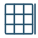
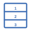
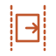

Sheets & Views  Curtain Wall Streamline curtain wall modeling and documentation. View Guide →
Sheets & Views  Master & Parts Improve model organization and parts workflows. View Guide →
Walls & Structure  Snap Walls to Grid Align walls with project grids efficiently. View Guide →